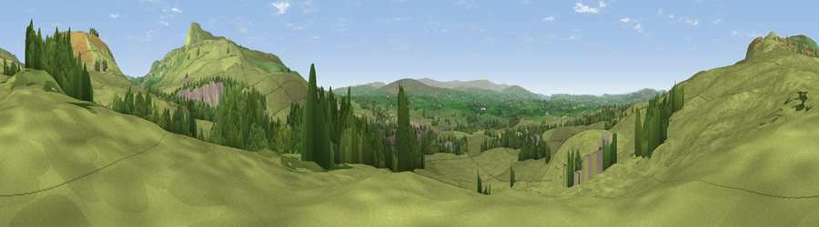

Viewpoint near Thornton in Lonsdale
#19698 in England · top 54% of its area beats it · near Thornton in LonsdaleThe view, rendered

A 360° render of this exact spot computed from the terrain model, tree cover and land cover — summer colours, afternoon light, calibrated against photographs of famous viewpoints. Real trees, hedges and buildings will differ in detail.
The panorama
Grey silhouette: terrain skyline in each direction (720 bearings, Earth curvature and refraction included). Dashed green: skyline with trees (+15 m) and buildings (+8 m) as obstacles. Blue strip: how far the ground is visible on each bearing.
Where the view opens
Wedge length = distance to the farthest visible ground on that bearing (vegetation-aware). Rings at 10, 25 and 50 km.
What fills the view
84% grassland · 13% woodland · 3% built-up
Angular shares of the visible panorama (visual magnitude), not map area. Landscape diversity 0.23 (0–1 Shannon).
Key numbers
More beautiful places nearby
The staircase of upgrades: each row has a higher view potential than everything closer. Driving times are estimates from straight-line distance, calibrated against real road routing — check an actual route before setting out.
| Place | Direction | Drive | Score |
|---|---|---|---|
| Tow Scar | NNW · 2 km | ~5 min | 73.1 |
| Dodson's Hill | NNW · 4 km | ~9 min | 74.9 |
| Viewpoint near Ingleton | E · 5 km | ~11 min | 79.5 |
| Whernside | NNE · 9 km | ~17 min | 79.9 |
| Warton Crag | W · 20 km | ~34 min | 83.2 |
| Viewpoint near Grange-over-Sands | W · 30 km | ~47 min | 83.4 |
| Viewpoint near Finsthwaite | WNW · 33 km | ~51 min | 90.3 |
| The Knoll | S · 387 km | ~372 min | 91.0 |
54.16291, -2.47129 · source: screening · position refined by local search. Computed location — check access rights before visiting.